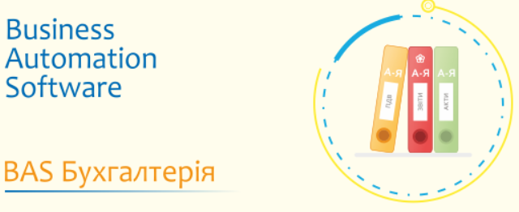

Odoo ERP system is enterprise resource planning software used company-wide for the management of business processes. Odoo provides seamlessly integrated functional business apps called Odoo apps that form an ERP solution when combined. Open-source software, Odoo, is available with SaaS subscription pricing as the Enterprise edition or as the Odoo free Community version.
Odoo ERP: https://www.odoo.com/

The Business Automation Framework (BAF) and the Business Automation Software (BAS) application solutions (configurations) developed on its basis are part of the BAS Programme System for Business. You can also use the BAF platform to develop your own configurations and applications.